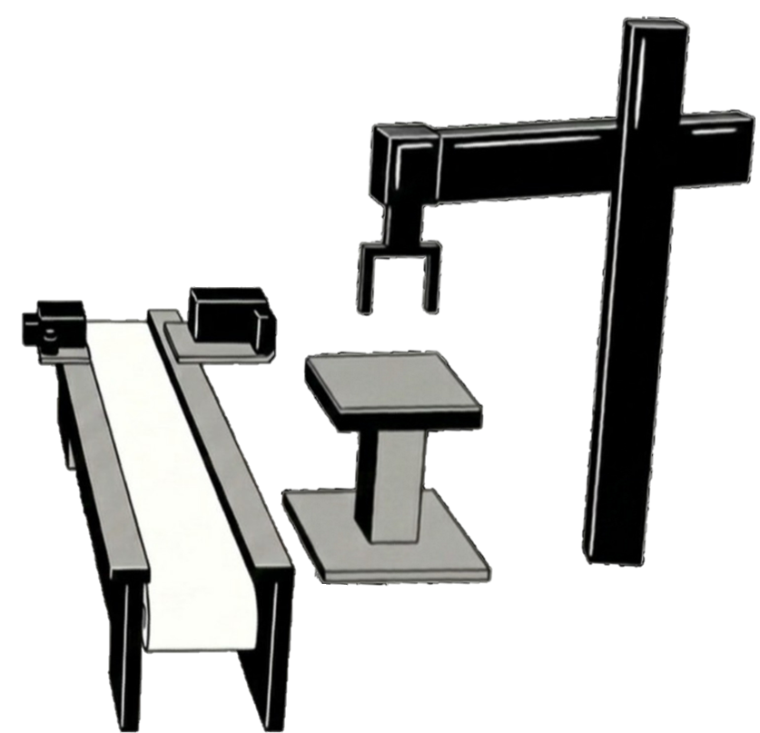

Productline Stability
Home
Machine Monitoring
→
War Room
→
Production Line
Video Monitoring
→
Production Detection
→
Virtual Model
→
Stability
→
Equipment Guide
→
Sensor Distribution
→
Sensor Content
→
Operation Interface
Operation Interface
→
Model Simulation
→
History Data
Historical Line Chart
→
Sensor History Search
→
Log History
→
PDF Download
→
Excel Download
→
Other
Predict Today's Output
→
Handover Notes
→
Backend Status
→
Carbon Footprint
→
Metal production line
Normal operating hours：
00:00
Lap * Time：
Non-metal production line

Normal operating hours：
00:00
Lap * Time：